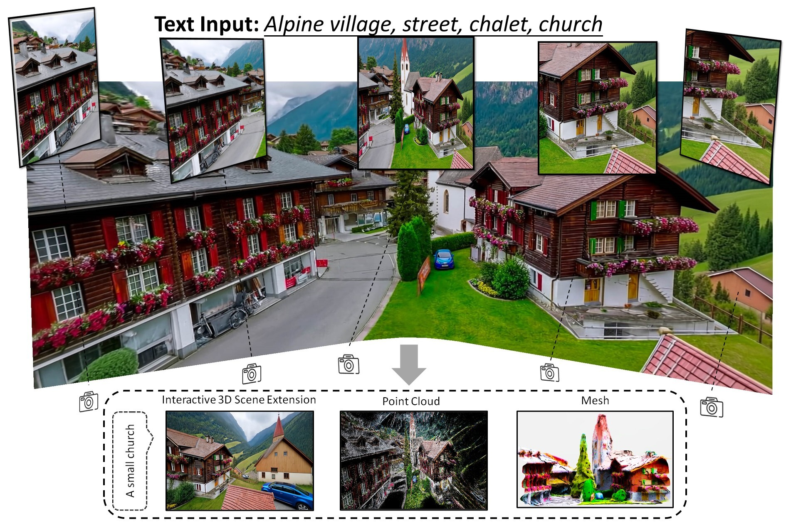
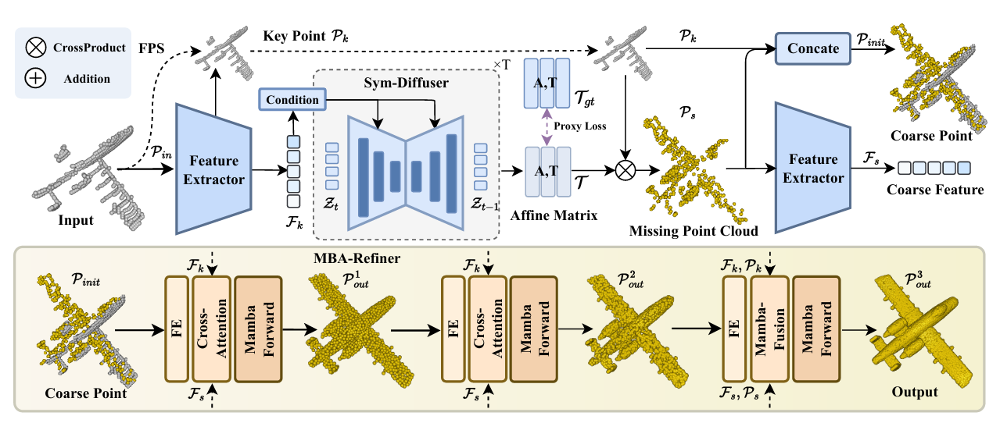
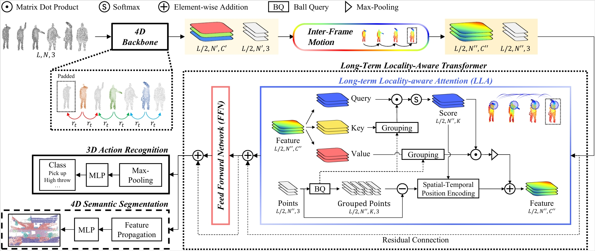
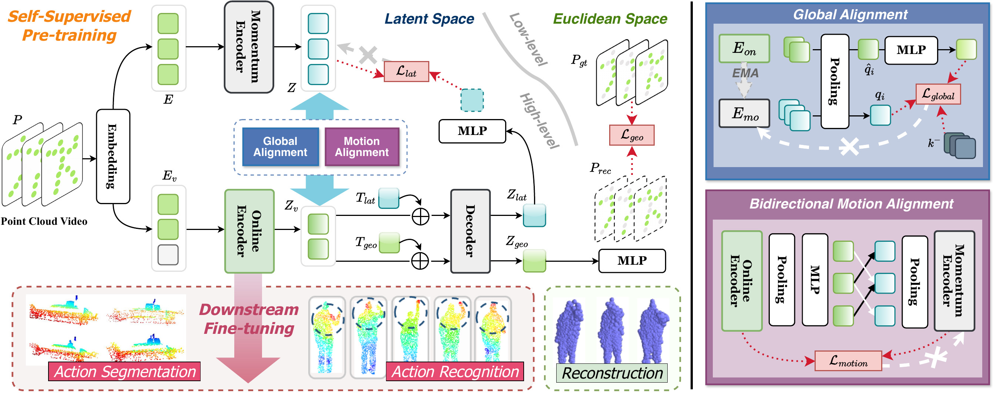
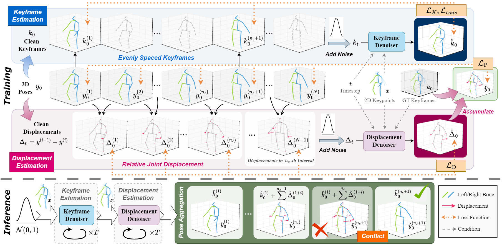

About Me
I am a master's student in Computer Science and Technology at Nanjing University of Aeronautics and Astronautics (2023–2026), advised by Prof. Pan Gao at the Immersive and Interactive Multimedia Lab (I2ML).
My current research interests are 3D vision tasks, especially 3D/4D generation, reconstruction, and understanding. I am also interested in learning representations.
News
- PhD Application: I am applying for PhD positions for Fall 2026. Feel free to contact me!
Publications
* denotes equal contribution.
Conference / Workshop
Journal
Under Review
2026
-

-

Simba: Towards High-Fidelity and Geometrically-Consistent Point Cloud Completion via Transformation Diffusion
Year to be confirmed
-

Point Long-Term Locality-Aware Transformer for Point Cloud Video Understanding
-

Disco4D: Towards Prior-Free Motion Representation Learning for Point Cloud Videos via Self-Disentangled Contrastive Pre-training
Under Review
-

MvP: Learning Motion Prior for Diffusion-Based 3D Human Pose Estimation
Education
- Nanjing University of Aeronautics and Astronautics — Master's studies in Computer Science and Technology
2023–2026 · Advisor: Prof. Pan Gao
What's More?
INTJ / 历史 / 天文 / 游戏 / 音乐
“A believing heart is magic” and “Just Do It”